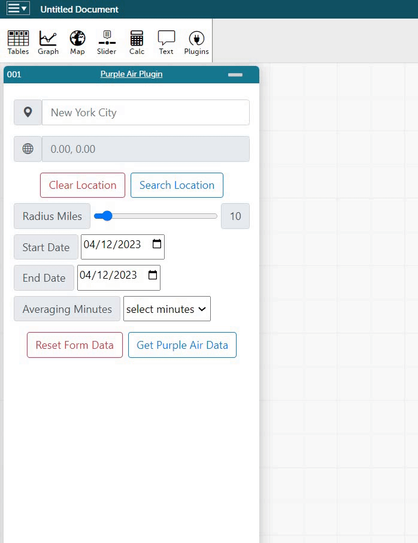

This website provides information on codappurpleairdata for USA cities. To search for a specific city, enter its name in the search bar on the left. The search results will provide the city's map coordinates, and you can select the radius from that point in miles. After selecting the radius, choose the start and finish dates and press enter to access the Purple Air data. The data you will be able to access includes:
This is how to search any city of your wish in US:
You will get the following Purple Air data:
Give it a try